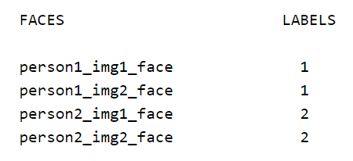

Next Generation E-Learning Platform
Our Main process is, making the the students to have the best possible learning experience.. Our Main Target Audience is University Students.
Our Main process is, making the the students to have the best possible learning experience.. Our Main Target Audience is University Students.
In recent years, there have been number of research efforts done to address the needs a smart e-learning management system. Below are some of the software functionalities and technologies that has been done prior to our research. Undertaking a Literature Survey helps us on finding and come up with the followings.
Regardless of the enormous growth of e-learning (electronic learning) in education and its perceived benefits, the efficiency of such e-learning systems will not be fully utilized if the students are not inclined to accept and use the system.
As a result, successful implementation of e-learning tools depends on whether the students are willing to adopt and accept the technology. Thus, it has become imperative for e-learning system developers to understand the factors affecting the user acceptance of web-based learning systems in order to enrich the students’ learning experience and to create a better product to fulfill the necessary requirements of the student.
...
“Use of E-Learning”, a research was done to find University students’ purpose to use e-learning [1]. In this research, Teknologi Malaysia University’s students try to apply and use the theory of technology acceptance model (TAM). They have employed structural equation modeling (SEM) approach with a SmartPLS software to investigate students’ adoption process. Discoveries indicate that the content of e-learning and self-efficacy have a positive impact and substantially associated with perceived usefulness and student satisfaction, which impact university students’ purpose to use e-learning. Although e-learning has expanded acceptance in universities around the world, the study of the intention to use e-learning is still essentially unexplored in Malaysia. The developed model is employed to explain the university student’s intention to use e-learning. The study concludes that university students in Malaysia have positive perceptions towards e-learning and intend to practice it for educational purposes.
E-Learning is reflected as an innovative approach to education delivery via electronic forms of information. Multiple researches have been done to find the best way to use the technology and to better fit the students’ necessities [1], [2]. The main obstacles that need to be addressed are the insufficient financial support, inadequate training programs, lack of ICT infrastructure, equivocal policies and objectives, and lack of awareness, interest, and motivation toward e-learning technology are considered as the main obstacles to enhance e-learning in Iraqi universities. The lack of training programs and inadequate ICT infrastructure are considered as the key issues which obstruct advancing of the e-learning process in Iraq [2].
Online body tracking by a PTZ camera has been done before to automatically track a single person and focus on that person [3], [4]. Online human body tracking method by an IP PTZ camera based on fuzzy-feature scoring was done. At every frame, candidate targets are detected by extracting moving targets using optical flow, a sampling, and appearance. The target is determined among samples using a fuzzy classifier. Results show that the system has a good target detection precision (> 88%), and the target is almost always localized within 1/4th of the image diagonal from the image center [3]. Autonomous lecture recording with a PTZ camera [4]. This reaches the same viewing experience while watching lectures recorded by an automated system. To accomplish this, they have developed an automatic cameraman (PTZ camera-unit) that is able to, Detect and track a single person/lecturer, Change between different types of shots, Listen to high-level instructions from a virtual or human director, and Take cinematographic rules into account
By tracking the lecturer, he is framed well in the picture at any moment and viewers can’t be distracted. Takes cinematographic rules into account, which ensures that the viewer remains focused and the viewing experience is aesthetically more interesting. The action axis is determined by calculating the direction of movement and the gaze orientation. A PID control loop ensures smooth movement of the camera. Because of the speed of the algorithm, it will be easy to downscale for embedded hardware and still perform the calculations real-time.
Remote controlling of the PTZ camera system for lecture rooms [5]. This consist of a simple and inexpensive software solution for remote management of PTZ camera systems. This provides the ability for users to remotely control the PTZ camera system from one place with the simultaneous image capturing ability. Users of this application are able to choose a number of presets and this functionality is provided programmatically by sending queries to CCTV system, which then responds back to the controller. All of the responses are processed immediately into the desired form and stored in a selected row in SQLite database. This method of data storage doesn´t require the installation of SQL database, which makes the solution easier to apply. The program was created using the programming language C#. But this software solution does not support real-time tracking of a person, just several predefined presets so that feature can be improved to real-time operation in Lecture Capturing System. OpenTrack - Automated Camera Control for Lecture Recordings [6] records lecture sessions automatically without the need for a human camera person. A Tabletop Lecture Recording System [7]. This research presents a lecture recording system that employs gestures and digital cameras to facilitate remote distance teaching. Virtual Cameraman [8] uses two PTZ cameras having different utilities. One is named full-shot PTZ camera and the other is movement PTZ camera. To get camera movement information, the system first obtains continuous images from full-shot PTZ camera and then extracts four fuzzified movement features which can represent four characters of audiences' motions respectively. On the other hand, an automatic camera movement model (ACMM) is constructed by recording photographers' habit of CM styles and shot types. The proposed system can select suitable CM styles and shot types by inputting the fuzzified motion features into the ACMM. After that, the system chooses the main target in the input frames obtained from the full-shot PTZ camera by using five aesthetic criteria. Finally, the system operates the movement PTZ camera to finish recording.
Real-time body tracking has been implemented before, but not quite as what we have planned on doing; real-time broadcasting of the footage without any delay. The complete package of having the lecture capturing along with audience if necessary, screen sharing, Face Recognition based remote login and attendance marking for online participants, viewing the lecture in real-time with added features such as reading what the lecturer has told and intelligently generating chapters on the video according to the lecture slides played alongside with this makes Lecture Capturing System a perfect complete package of e-learning. A thorough research related to e-learning systems has led to the identification of some of the most influential factors used in the field of information systems research. More specifically, characteristics as well as the limitations, weaknesses, and strengths of web-based learning systems. Student variables, such as technical issues and adapting to the new ways are important variables that influence student learning, especially in a collaborative e-learning environment. Understanding these variables is now helpful for developers to design eloquent educational activities to promote student knowledge construction and make learning more effective and appealing. In particular, this research helps to better understand the characteristics of students and to comprehend what the students expect from the learning management systems. This can help the developers achieve the most effective deployment of such systems and also helps them improve their strategic decision making about technology in the future, they can decide on the best approach that fit their students before implementing any new technology.
Read More
[1] W., “Use of E-Learning,” Universiti Teknologi. Malaysia, Johor, Malaysia, 2018.
[2] M. A. Mahmod, “E-learning in Iraqi Universities,” in International Conference on Computing, Engineering, and Design (ICCED), Selangor, Malaysia, 2017.
[3] P. D. Z. Varcheie, “Online Body Tracking by a PTZ Camera in IP Surveillance System,” Department of Computer Engineering and Software Engineering, Station Centre-ville, Montr´eal, (Qu´ebec), Canada, 2009.
[4] T. G, “Dries Hulens, ‘Autonomous lecture recording with a PTZ camera,’” in Canadian Conference on Computer and Robot Vision, Sint-Katelijne-Waver, Belgium, 2014.
[5] M. M. M. H. R. Jacko, “Remote control of the PTZ camera system for lecture rooms,” Dep. Comput. Inform., 2015.
[6] B. Wulff, “OpenTrack - Automated Camera Control for Lecture Recordings,” IEEE Int. Symp. Multimed., 2011.
[7] C.-F. C. a. P.-C. S. Yong-Quan CHEN, “A Tabletop Lecture Recording System,” in International Conference on Consumer Electronics-Taiwan, Taiwan, 2015.
[8] Y.-T. T. S. C. a. S.-W. C, “Chiung-Yao Fang, ‘Chiung-Yao Fang, You-Ting Tsai, Shuan Chu, and Sei-Wang Chen,’” Department of Computer Science and Information Engineering, Taiwan, 2015.
Today, e-learning platforms are used for knowledge transfer through electronic media. This transfer can address several learning contexts, ranging from conventional classroom delivery to online and offline distance learning tactics. There are a countless number of e-learning platforms which cover various aspects of learning such as video streaming, capturing the audience in the lecture hall if necessary, and screen sharing. But, the solution we propose is to handle advanced and enhanced features. Biometric recognition of participants to ensure authentication is proposed so that the attendance can be recorded. In addition to this, every lecture will be maintained as an mp4 video with the set of slides used, and the lecturer’s voice relevant to each slide, which provides an easy way of reference to the students who missed a particular lecture. Another important aspect considered in this research is the way of interaction between the lecturer and the students who have any doubts to be cleared during the lecture. For this purpose, when the students who are physically present in the lecture hall are concerned, a gesture-based system is proposed. Here, when the lecturer notices a specific student with the gesture of asking a question, the lecturer will have to perform a gesture for the camera to turn towards the audience and focus on the specific student who has the doubt by once again detecting the gesture performed by the student. When a remotely logged in user has a question for the lecturer, he/she has to signal the lecturer using a specific command, and then the lecturer has to decide whether to give video and/or audio control over to the specific user. As real-time video streaming consumes a lot of quota and bandwidth, the system has to intelligently manage data usage by ensuring the best possible transmission rate with minimum data consumption. Taking the above facts into consideration, we propose a smart, cloud-based e-learning platform with advanced and flexible real-time video streaming, while ensuring interactivity between the lecturer and the students.
Granting multiple platforms support live streaming of a video, what makes Lecture Capturing System unique is its ability to automatically focusing on the lecturer in real-time, lecturer is framed well in the picture at any moment and viewers can’t be distracted. Takes cinematographic rules into account, which ensures that the viewer remains focused and the viewing experience is aesthetically more interesting and gives the viewers the best viewing angle all the time without a need for a separate cameraman. An IP camera will be used to track the lecturer’s movement and gestures in front of the camera and produce the necessary PTZ signals to pan, tilt and zoom accordingly thus ensuring that the lecturer’s actions are always recorded without missing any detail. This video recording will be immediately compressed ‘on -the-fly’ in order to reduce its file size, then streamed live and also saved in the database for backup purposes and viewing later. Therefore, the students have the choice of attending the lecture via the live stream or listening to the lecture later. This is very beneficial to students since they can also attend lectures without being physically present (remotely) at the lecture.
Camera Movement with Detection
Uses OpenCV’s Haar Cascasde Classifier and dlib libraries to do the person detection task. First it initializes a face cascade using the frontal face haar cascade provided with the OpenCV library. Then it starts to detect And Track the Largest Face it can find, if not tracking Face or lost the tracked face again it uses haar cascade detector to detect face and then correlation tracker to follow it using dlib
Both methods require to scan each the whole frame with a sliding window. The algorithm then tries to find the features of a person in each window position. These methods are too expensive to perform in each frame if we want to run our person tracker on restricted hardware like a Raspberry Pi.
For this reason we combine the person detector with a correlation tracker. The correlation tracker expects a region of interest and starts tracking the pixels inside that region. In subsequent frames it tries to find where the pixels have most likely moved. This is much faster and more robust than trying to find the person in each and every frame again.
Person Detection - Secondary
Uses YOLO v2 and Deep Sort with TensorFlow to track the lecturer in the stage. Uses a pre trained model to detect humans.
Uses NVIDIA CUDA to use TensorFlow gpu which is extremely fast than using the cpu version.
You only look once (YOLO) is a state-of-the-art, real-time object detection system. On a Pascal Titan X it processes images at 30 FPS.

PTZ Camera Movement
The node-onvif is a Node.js module which allows you to communicate with the network camera which supports the ONVIF specifications.
The ONVIF (Open Network Video Interface) is an open industry forum promoting and developing global standards for interfaces of IP-based physical security products such as network cameras. The ONVIF specifications are available in their web site.
Recently, most of network cameras for business support the ONVIF standard. Furthermore, some network cameras for home support it though the implementation is partial. The node-onvif allows you to control network cameras which implement the ONVIF standard.
With this there are separate commands to move the camera movement left, right, up or down at selected speeds and can freeze movement according to the requirements.
With the ability to share the screen either completed or selected custom application window right from the web browser and start streaming it along the main live stream makes the lectures task at ease and more efficient. This is helpful because most of the times when the lecturer starts to plug his laptop to the main projector in a normal classroom all of his desktop content open tabs on web browser, everything is visible to the students, privacy is a concern and it’s a hassle to switch sharing the screen on and off all the time to the lecturer. With this Easy Screen Share feature lecturer can stream his webcam footage alongside with the shared screen if required (If in front of the laptop blocking the main camera view).
This extension simply initializes socket.io and configures it in a way that single audio/video/screen stream can be shared/relayed over users without any bandwidth/CPU usage issues. This uses RTCMultiConnection is a WebRTC library that is used for WebRTC streaming.
An IP camera will be used to track the lecturer’s movement and gestures in front of the camera and produce the necessary PTZ signals to pan, tilt and zoom accordingly thus ensuring that the lecturer’s actions are always recorded without missing any detail. This video recording will be immediately compressed ‘on -the-fly’ in order to reduce its file size, then streamed live and also saved in the database for backup purposes and viewing later. Therefore, the students have the choice of attending the lecture via the live stream or listening to the lecture later. This is very beneficial to students since they can also attend lectures without being physically present (remotely) at the lecture. During the live streaming session, the system will decide which video resolution (e.g. 480p, 720p, 1080p) to use for the playback at the student’s end depending on the speed of his/her internet connection. Live streaming is achieved via Kurento which is a WebRTC (Web Real-Time Communications) media server and a set of client APIs. During the live streaming session, the lecturer also has the ability to share his/her entire computer screen with the participating students if required, making certain that not even the most minute detail is not missed. In the case of having low bandwidth to support this feature, the lecturer has the option to disable the IP cameras in order to save bandwidth. This mode of lecturing provides better participation and interaction between the lecturers and students. An example of this is if a student wants to ask a question, the control would be given to the particular student by the lecturer and the application would support audio only, video only or both audio-video sources of the particular student. But the lecturer has the ability to get back the control of the audio and video sources of the system when required.
An IP camera will be used to track the lecturer’s movement and gestures in front of the camera and produce the necessary PTZ signals to pan, tilt and zoom accordingly thus ensuring that the lecturer’s actions are always recorded without missing any detail. This video recording will be immediately compressed ‘on -the-fly’ in order to reduce its file size, then streamed live and also saved in the database for backup purposes and viewing later. Therefore, the students have the choice of attending the lecture via the live stream or listening to the lecture later. This is very beneficial to students since they can also attend lectures without being physically present (remotely) at the lecture. During the live streaming session, the system will decide which video resolution (e.g. 480p, 720p, 1080p) to use for the playback at the student’s end depending on the speed of his/her internet connection. Live streaming is achieved via Kurento which is a WebRTC (Web Real-Time Communications) media server and a set of client APIs. During the live streaming session, the lecturer also has the ability to share his/her entire computer screen with the participating students if required, making certain that not even the most minute detail is not missed. In the case of having low bandwidth to support this feature, the lecturer has the option to disable the IP cameras in order to save bandwidth. This mode of lecturing provides better participation and interaction between the lecturers and students. An example of this is if a student wants to ask a question, the control would be given to the particular student by the lecturer and the application would support audio only, video only or both audio-video sources of the particular student. But the lecturer has the ability to get back the control of the audio and video sources of the system when required.
A plugin was implemented for the OBS Studio software which allows a lecturer to do an offline recording of a lecture and then upload it directly to the server for further processing. After recording the lecturer’s desktop screen while s/he conducts a lecture, the designed plugin would upload this video to the remote server based on predefined settings at the click of a button. These settings can be changed by the lecturer to suit their needs (e.g. upload video now or at a later scheduled time). Once the video is uploaded to the remote server, the next level of processing should be done at the server.
The lecturer can view the list of videos which have been uploaded. Out of this list, the lecturer can select a video to be converted into a series of thumbnail chapters. Each frame in the video is analyzed by an algorithm for changes in color and intensity - namely the average HSV color space difference (difference in hue, saturation, and luminance of the frame). If this calculated value is very high than the preceding and following values, it means that there has been a scene change. Therefore, the video is split at this time frame. This process is repeated for the entire length of the video clip until the entire video clip is analyzed and all the video chapters are created. Following this process is the real-time speech transcription (audio-to-text conversion) of each video chapter. This is achieved via the Watson Speech-To-Text API. This service leverages machine intelligence to transcribe the human voice accurately. The service combines information about grammar and language structure with knowledge of the composition of the audio signal resulting in a remarkable accuracy level of 94.5%. Therefore, the end result would be a set of videos along with their respective audio, presentation slide, and text. These videos would be stored in the database so that students can access them any time after the lecture session to further understand and clarify their knowledge Some noticeable advantages of this feature is that students can watch the parts of the lecture which they didn’t understand properly, and also skip to various lecture slides instead of watching the entire lecture. Even if the accent of the lecturer is unclear, students can still understand what has been said clearly due to the speech transcription feature.
The administrator is able to manage the internet quota allocation for users from the dashboard. The list of users along with their usage statistics such as used quota and remaining quota can be viewed filtered by user type (e.g. lecturer, student), month, and year. This monthly quota can be edited by the administrator for a single user (e.g. specific lecturer’s id) or all users of a particular user type (e.g. all students).
A student or a lecturer can login to the system using face recognition. Initially, the administrator of the Lecture Capturing System should register the user by uploading quality images and relevant details of the user. After registering a user, the server will train the face recognition classifier with the newly uploaded images of a user along with the existing images of users. Thereafter the user will be authenticated from the face recognition process through the webcam only if the confidence threshold of the face recognition classifier is greater than 90%. If it is less than 90%, the user will not be authenticated. In terms of security, session handling will take place after face recognition based login.
Face Recognition used in the LCS system follows three main steps.
1. Prepare training data
OpenCV computer vision library, Python and Numpy is used as dependencies to implement face recognition function in the system. OpenCV provides two pre trained and ready to be used face detection classifiers called Haar classifier and LBP classifier. Local Binary Patterns (LBP) Cascade classifier is used as the face recognition classifier to detect and recognize faces in this system. LBP is a type of visual descriptor used for classification in computer vision. The LBP classifier is used due to its main advantages such as shorter training time, high accuracy rate in difficult lighting conditions which will be useful when recognizing through the webcam and computationally simple and fast. The training dataset consists 12 images for each user and each user is assigned a label (e. g. s1, s2) upon registering to the system. Furthermore, this step will read all the images of a person and apply face detection to each one using LBP classifier. Then, add each face to face vectors with the corresponding person label extracted. Finally the data preparation step will produce following face and label vectors.
2. Train face recognizer
The face and label vectors returned from the data preparation step will be converted to a numpy array and passed to the OpenCV LBPH recognizer for training.
3. Prediction
Once the user is navigated to the login page, the server automatically detects the face from the LBP classifier, predicts the face by calling the trained OpenCV LBPH face recognizer, returns the predicted name of the user associated with the label and live streams the response from the server (recognized face plot,name of the user,confidence threshhold) to the login page. Thereafter, the user will get logged in to the system after the user clicks the face login button.
Using facial recognition, the attendance is marked automatically for the students who are present in the lecture room and also the students who are logged in remotely through the Lecture Capturing System during the live streaming lecture session. The administrator and the lecturer is able to view, modify and filter attendance of students. A student is able to view his/her attendance with the aid of the filtering options available. Some noticeable advantages of this feature is that it will add an extra layer of security to the system to ensure that only authorized persons gain access to the university’s content. A comprehensible advantage of this method of biometric authentication of students can be noted during the time of an online exam to verify that the person on the other end is actually who they claim to be. Also, this feature will solve the problem of students marking attendance for other students.
Initial step is to manage bandwidth in the server of the system using bandwidth optimization techniques such as compression, clustering etc to reduce bandwidth costs when live streaming. The goal is to reduce the data size which will be passed from client to server and vice versa. The next outcome is a bandwidth monitoring dashboard which will consist of traffic usage, system information, CPU load, alerts to notify exceeded predefined threshold settings and attacks etc which will only be accessible to the administrator of the system.